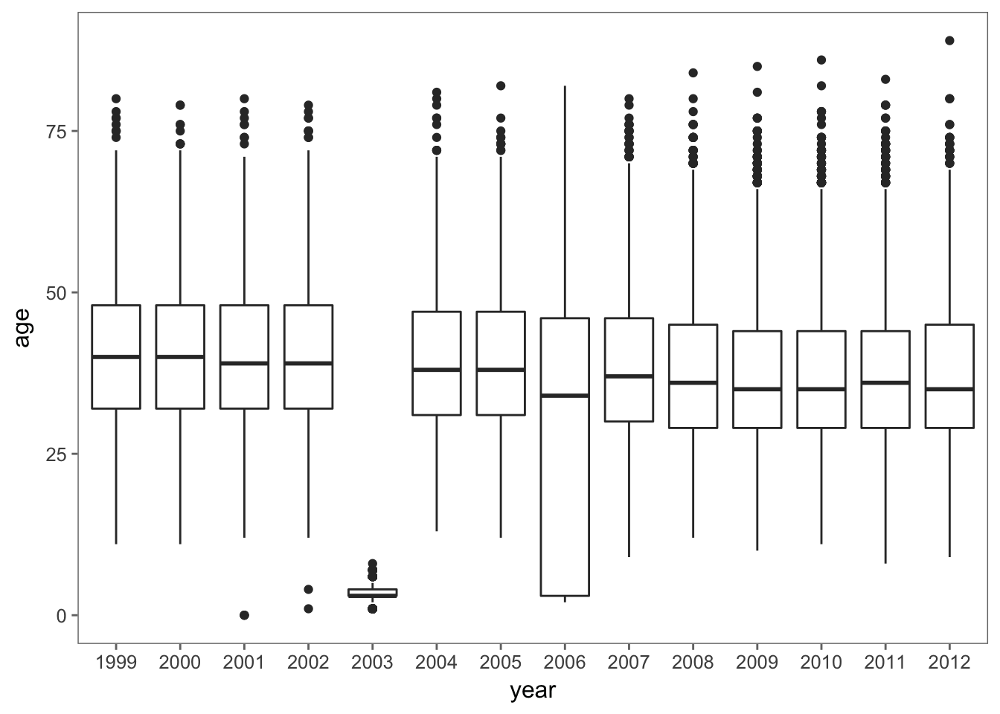
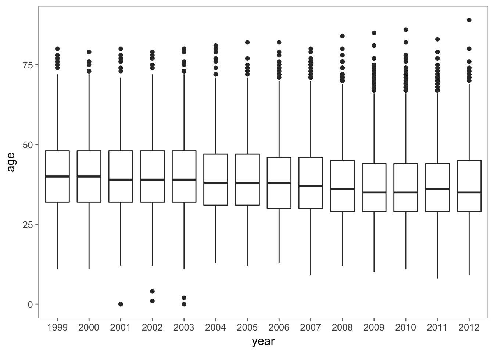

In this section, we consider how to convert the list of character matrices, men_res_mat, into an appropriate format for analysis. Currently, the data values are all character, which is not conducive to, e.g., finding the median age of the runners. However, we can easily reformat age into numeric values with the as.numeric() function. Do we want to turn the entire matrix into a numeric matrix? Not really. It doesn’t make sense to try to convert the runner’s name into a numeric value. For this reason, we want to create a data frame because it allows our variables to be different types. We have 6 variables: the runner’s name, home town, age, and 3 versions of time. As just mentioned, we want to convert age to a numeric and leave name as character. What about the other variables? We probably want to also keep hometown as character.
Time is stored as a string in the format: hh:mm:ss. We want time in a numeric format so it can be more easily summarized and modeled. For this, we will use the lubridate package, which is excellent for converting character strings to dates and times. We also need to reconcile the 3 different recorded times (gun, net, and plain time). Net time is considered more accurate than gun time so we can simply use net time when available and otherwise use gun time or time, whichever is reported. Of course, we can keep all 3 versions of time around and let the analyst explore relationships between them and decide which to use, but we keep things simple for now and just report one time for each runner.
Before we begin converting our character strings into numeric values, we also consider whether there are any new variables we might want to create. If we are to combine all the data from the 14 years of records into one data frame, then we should keep track of the year. Likewise, if we are to combine the men’s and women’s results then we also want a variable that indicates the sex of the runner. These are very simple to make when combining data frames with dplyr::bind_rows().
We begin with the task of creating the numeric variable age with as.numeric(), e.g., for the 2012 males,
age <- as.numeric(men_res_mat$`2012`[ ,'ag'])Note that we subsetted the list to work with the 2012 matrix and then subsetted this matrix to work with the column named ag. We check a few age values with
tail(age)## [1] 41 39 56 35 NA 48These values look reasonable, but let’s check more thoroughly that our data extraction works as expected by summarizing each year’s ages with
age <- map(men_res_mat, ~ as.numeric(.x[ ,'ag']))## Warning in .f(.x[[i]], ...): NAs introduced by coercion
## Warning in .f(.x[[i]], ...): NAs introduced by coercion
## Warning in .f(.x[[i]], ...): NAs introduced by coercionWe received a warning message that our conversion of the character values for age into numeric resulted in NA values, meaning that some of the values do not correspond to numbers. We want to look into the specific cause of these messages, but first we examine age.
We create side-by-side boxplots of the yearly distribution of the age of the runners to give a quick check on the reasonableness of the values.
age %>%
enframe(name = 'year', value = 'age') %>%
unnest() %>%
ggplot(aes(year, age)) +
geom_boxplot()## Warning: Removed 66 rows containing non-finite values (stat_boxplot).Figure 4.1: Box Plot of Age by Year. These side-by-side boxplots of age for each race year show a few problems with the data for 2003 and 2006. The runners in these years are unusually young.
Figure 4.1 reveals problems with 2 years. All of the runners in 2003 were under 10 and more than 1 in 4 runners in 2006 were under 10! Clearly something has gone wrong.
Let’s examine the original text for 2003 and 2006.
head(men_files$`2003`)## [1] ""
## [2] "Place Div /Tot Num Name Ag Hometown Gun Tim Net Tim "
## [3] "===== ========= ===== ============================= == =================== ======= ======= "
## [4] " 1 1/1999 6 John Korir 27 KEN 46:56# 46:55 "
## [5] " 2 2/1999 1 Reuben Cheruiyot 28 KEN 47:03# 47:02 "
## [6] " 3 3/1999 8 Gilbert Okari 24 KEN 47:07# 47:07 "men_files$`2006`[2200:2205]## [1] " 2192 1263/2892 1475 Matt Curtis 39 Vienna 1:27:08 1:27:40 8:46 "
## [2] " 2193 94/279 1437 Joe McCloskey 59 Columbia 1:27:01 1:27:40 8:46 "
## [3] " 2194 257/590 7062 Donald Hofmann 48 Princeton Junct 1:25:45 1:27:41 8:47 "
## [4] " 2195 1264/2892 7049 Claudio Petruzziello 23 Princeton Jct 1:25:45 1:27:41 8:47 "
## [5] " 2196 339/746 3319 Robert Morrison 40 South Boston 1:23:54 1:27:41 8:47 "
## [6] " 2197 1265/2892 9345 Larry Cooper 32 Arlington 1:26:42 1:27:41 8:47 "We see that in 2003, the age values are shifted to the right one space in comparison to the location of the ‘=’ characters. This means that we are picking up only the digit in the tens place. In 2006, some but not all of the rows have values that are off by one character.
We can easily solve both of these problems by including the value in the “blank” space between columns. We can do this by changing the index for the end of each variable when we perform the extraction. That is, we modify the line in select_cols() that locates the end of a column to include the blank position, i.e.,
select_cols <- function(col_names, header_row, search_locs) {
select_col <- function(name, header_row, search_locs) {
start_pos <- str_locate(header_row, name)[1,1]
if (is.na(start_pos)) return(c(NA, NA))
index <- sum(start_pos >= search_locs)
c(search_locs[index] + 1, search_locs[index + 1])
}
map(col_names, select_col,
header_row = header_row,
search_locs = search_locs) %>%
do.call('rbind', .)
}When we use this revised calculation in select_cols(), we pick up the blank character after each field. This should not matter when we convert our text data to numeric and if we don’t want trailing blanks in our character-valued variables, we can easily remove them with regular expressions.
In the process of confirming our conversion of age from character to numeric, we uncovered problems with our extraction process. We need to modify our helper function select_cols() from Chapter 3 to address the problem. This process is iterative as we continue to check that our data make sense. When we uncover nonsensical results, we investigate them further, which possibly leads to retracing our steps to clean up messy data.
After we modify this one line of code in select_cols() and reapply this updated version of the function to the tables of race results, we check again the summary statistics with boxplots. We find that the problem with too many young runners has cleared up (see Figure 4.2).
## Warning: Removed 64 rows containing non-finite values (stat_boxplot).Figure 4.2: Box Plot of Age by Year. These side-by-side boxplots of age for each race year show a reasonable age distribution. For example, the lower quartile for all years range between 29 and 32. The problems identified earlier for 2003 and 2006 have been addressed.
We now turn to the warning messages that occurred when we converted the character strings for age to numeric values. We were given several messages ‘NAs introduced by coercion’. We count the number of NA values in each year with
map_int(age, ~ sum(is.na(.)))## 1999 2000 2001 2002 2003 2004 2005 2006 2007 2008 2009 2010 2011 2012
## 1 1 28 3 2 0 13 2 5 0 2 6 0 1In 2001, we have 62 NAs for age. We need to investigate. To make our work simpler, let’s assign the 2001 ages to a vector called age2001. We do this with
age2001 <- age$`2001`Let’s examine the original rows in the file that correspond to an NA in age2001. Recall that we dropped the header of the file before extracting the variables so we need to add an offset to the location of the NAs in age2001 in order to pick out the correct rows in the original table. We find the offset with
offset <- str_which(men_files$`2001`, '^===')
offset## [1] 5We then find the lines in the original file that have the bad age values with
bad_age_idx <- which(is.na(age2001)) + offset
tail(men_files$`2001`[bad_age_idx])## [1] " 2832 3969 Dave DOHERTY 27 Arlington VA 1:29:55 1:38:56"
## [2] " 2922 1301 Michael DAVIS 38 Rockville MD 1:35:01 1:40:00"
## [3] " 2923 3156 Ed RIDGWAY 52 Reston VA 1:36:08 1:40:05"
## [4] " 2924 23819 Craig BLAKELEY 48 Vienna VA 1:38:03 1:40:06"
## [5] " 2925 917 Stephen GREENE 35 Baltimore MD 1:29:12 1:40:07"
## [6] " 3529 5134 Gary KODECK 49 Reisterstown MD 2:03:37 2:07:23"To save space, only the last few lines are shown here. With one exception, all of the rows are blank/empty. The one exception is the row that corresponds to the footnote that defines the meaning of the ‘#’ annotation. Where in the table are these rows located?
bad_age_idx## [1] 1756 1757 1758 1759 1810 1811 1812 1813 1864 1865 1866 1867 1918 1919
## [15] 1920 2521 2522 2523 2524 2875 2876 2877 2878 2979 2980 2981 2982 3594These blank lines are scattered throughout the file. We can modify the extraction by checking for blank rows and removing them. The regular expression,
blanks <- str_which(men_files[['2001']], '^[[:blank:]]*$')locates all rows that are entirely blank. The second argument to str_which uses several meta characters to specify the pattern to search for. The ^ is an anchor for denoting the start of the string, the $ anchors to the end of the string, the [[:blank:]] denotes the equivalence class of space and tab characters, and the * indicates that the blank character can appear 0 or more times. All together the pattern ^[[:blank:]]*$ matches a string that contains any number of blanks from start to end, i.e., only blank lines.
A simpler expression locates the footnote rows, i.e., rows that begin with # or *. Here is the modified extract_variables() function:
extract_variables <- function(file, var_names = c("name", "home", "ag", "gun", "net", "time")) {
# find the index of the row with =s
eq_idx <- str_which(file, '^===')
# extract the two key rows and the data
spacer_row <- file[eq_idx]
header_row <- file[eq_idx - 1] %>% str_to_lower()
# find blank lines
blanks <- str_which(file, '^[[:blank:]]*$')
# find comments
comments <- str_which(file, '^[[:blank:]]*[#\\*]')
# remove header, blank lines, and comments
body <- file[-c(1:eq_idx, blanks, comments)]
# get starting and ending positions of variables
search_locs <- find_col_locs(spacer_row)
loc_cols <- select_cols(var_names, header_row, search_locs)
values <- map(body, str_sub, loc_cols) %>% do.call('rbind', .)
colnames(values) <- var_names
invisible(values)
}After adding this code to carry out the additional cleaning of the tables, the 61 NAs in 2001 are gone as well as many but not all of the other NAs in other the years.
map_int(age, ~ sum(is.na(.)))## 1999 2000 2001 2002 2003 2004 2005 2006 2007 2008 2009 2010 2011 2012
## 1 1 28 3 2 0 13 2 5 0 2 6 0 1Continued inspection of Figure 4.2 uncovers another problem – the minimum values for age in 2001, 2002, and 2003 remain small, i.e., close to 0. That’s clearly not possible! Let’s find which runners have an age under 5 and look at their records in the original table. For 2001, we have
which(age2001 < 5)## [1] 1377 3030 3079men_files[['2001']][which(age2001 < 5) + offset]## [1] " 1377 5629 Steve PINKOS 0 Washington DC 1:20:07 1:22:34"
## [2] " 2970 5332 Kurt MENKE 38 Springfield VA 1:38:07 1:40:50"
## [3] " 3019 5199 Thomas HAMMER 53 Falls Church VA 1:39:05 1:41:41"Apparently there are runners with an age entered as 0! Since these are the actual values in the table, we leave the decision as to what to do with these runners for later when we analyze the data. At this point, it appears we have successfully taken care of the creation of the age variable. However, we typically clean the variables simultaneously as an error in one variable often leads to errors in others based on position. As we clean the other variables, we may need to re-examine age to ensure that the values for age remain valid.
Next, we turn to the creation of the time variable. As mentioned at the beginning of this section, the time appears as hh:mm:ss and we wish to convert it to minutes. However, to carry out this computation, we must split the time field up into its constituent pieces. Also, some runners completed the race in under one hour so their times appear in a slightly different format, i.e., mm:ss, and we need to be able to handle both formats in our processing. For simplicity, we again start with converting the time variable for one year, say 2012. We create a vector to develop our code as follows:
char_time <- men_res_mat[['2012']][ ,'time']
head(char_time)## [1] " 45:15 " " 46:28 " " 47:33 " " 47:34 " " 47:40 " " 47:50 "tail(char_time)## [1] "2:26:47 " "2:27:11 " "2:27:20 " "2:27:30 " "2:28:58 " "2:30:59 "We split each character string up into its parts using str_split() with
time_pieces <- str_split(char_time, ':')The : characters are discarded in the process, and the return value from str_split() is a list of character vectors. We have one vector for each input string, where the elements of the vector contain the pieces of the string separated by each : character. We confirm that the splitting worked properly by examining the first and last times, i.e.,
head(time_pieces, 1)## [[1]]
## [1] " 45" "15 "tail(time_pieces, 1)## [[1]]
## [1] "2" "30" "59 "We convert these elements to numeric values and combine them into one value that reports time in minutes with
run_time <- map_dbl(time_pieces, function(x) {
x <- as.numeric(x)
if (length(x) == 2) x[1] + x[2] / 60
else 60 * x[1] + x[2] + x[3] / 60
})We check our conversion with
summary(run_time)## Min. 1st Qu. Median Mean 3rd Qu. Max.
## 45.25 77.57 87.47 88.43 97.78 150.98It appears that our time conversion works. We saw earlier that the fastest runner completed the 2012 race in 45 minutes and 15 seconds, which is 45.25 minutes, and the slowest completed it in 2 hours 30 minutes and 59 seconds, which is nearly 151 minutes. For the sake of reproducibility, we encapsulate this conversion into a function called convert_time().
Let’s wrap these conversions into a function to apply to the character matrices in menResMat and return a data frame with variables for analysis. We call this function create_df(). In addition to the conversion of character strings to numeric, we also create two new variables, year and sex. To do this, we must have input arguments to tell us which year we are cleaning and whether the results are for men or women. Lastly, we also choose which time variable to include in the data frame from among the 3 available, with a preference for net time. The function appears as
create_df <- function(res, year, sex) {
# determine which time to use
use_time <- if (!is.na(res[1,'net'])) {
res[ ,'net']
} else if (!is.na(res[1,'gun'])) {
res[ ,'gun']
} else {
res[ ,'time']
}
run_time <- convert_time(use_time)
results <- data_frame(year = year,
sex = sex,
name = res[ ,'name'],
home = res[ ,'home'],
age = as.numeric(res[ ,'ag']),
time = run_time)
invisible(results)
}We apply our new function, create_df(), to all of the male results as follows:
men_df <- map2(men_res_mat, 1999:2012, create_df, sex = 'm')
warnings()[c(1, 2, 49, 50)]## NULLIt is likely that the conversion problems are coming from the conversion of time from a character string into minutes because we have already handled the conversion of age. We can check the number of NA values for time with
map_dbl(men_df, ~ sum(is.na(.x$time)))## 1999 2000 2001 2002 2003 2004 2005 2006 2007 2008 2009 2010 2011 2012
## 0 0 1 0 0 0 0 5232 83 0 164 68 0 0There are a large number of NAs in 2007, 2009, and 2010, and it appears that all of the run time values for 2006 are NA.
Let’s begin by examining a few of the records in 2007, 2009, and 2010 that have an NA in run time. We find that these are caused by runners who completed half the race but have no final times and by runners who have a footnote after their time, e.g.,
## [1] " 1 1/54 13 Tadesse Tola 19 Ethiopia 46:01# 4:37 28:47 "
## [2] " 5273 309/309 16370 Stephen Peterson 57 Washington DC # 1:36:29 "We can easily modify create_df() to eliminate the footnote symbols (# and *) from the times and drop records of runners who do not complete the race. These revisions are
create_df <- function(res, year, sex) {
# determine which time to use
use_time <- if (!is.na(res[1,'net'])) {
res[ ,'net']
} else if (!is.na(res[1,'gun'])) {
res[ ,'gun']
} else {
res[ ,'time']
}
# remove #, *, and blanks from time
use_time <- str_replace_all(use_time, '[#\\*[:blank:]]', '')
# drop rows with no time
res <- res[use_time != '', ]
run_time <- convert_time(use_time[use_time != ''])
results <- data_frame(year = year,
sex = sex,
name = res[ ,'name'],
home = res[ ,'home'],
age = as.numeric(res[ ,'ag']),
time = run_time)
invisible(results)
}After we apply this revised function to men_res_mat to create our data frame, most missing values are gone except for 2006.
map_dbl(men_df, ~ sum(is.na(.x$time)))## 1999 2000 2001 2002 2003 2004 2005 2006 2007 2008 2009 2010 2011 2012
## 0 0 1 0 0 0 0 5232 0 0 0 0 0 0Let’s look at the missing value for 2001.
men_df[['2001']] %>% filter(is.na(time))## # A tibble: 1 x 6
## year sex name home age time
## <int> <chr> <chr> <chr> <dbl> <dbl>
## 1 2001 m Peter HUI Silver Spring MD 70 NAi <- grep('Peter HUI', men_files[['2001']])
men_files[['2001']][(i-1):(i+1)]## [1] " 2249 3668 Jeff DRAMSTAD 35 Arlington VA 1:26:08 1:31:46"
## [2] " 2250 4666 Peter HUI 70 Silver Spring MD 1:30:"
## [3] " 2251 3134 King ADKINS 51 La Plata MD 1:27:44 1:31:48"Somehow this runner’s time got entered incorrectly. Because runners are listed in order of their time, we can infer that he probably had a time of 1:31:47. We’ll fill in that value manually.
men_df[['2001']]$time[2250] <- 91 + 47/60As for 2006, the problem can be seen when we look at the header lines of that file.
men_files[['2006']][7:11]## [1] "Place Div/Tot Num Name Ag Hometown Net Tim Gun Tim Pace S "
## [2] "===== ======== ====== ====================== == ======================= ======= ===== = "
## [3] " 1 1/2892 1 Gilbert Okari 27 Kenya 47:24 47:25# 4:45 "
## [4] " 2 2/2892 11 Samuel Ndereba 29 Kenya 47:34 47:35# 4:46 "
## [5] " 3 3/2892 3 Rueben Kibet Chebii 23 Kenya 47:38 47:39# 4:46 "The separator line of ’=’s does not have a space between the “Hometown” and “Net Tim” columns. The easiest thing to do in this scenario is to just alter the separator line directly and rerun extract_variables().
spacer_row_2006 <- men_files[['2006']][8]
str_sub(spacer_row_2006, 64, 64) <- ' '
men_files[['2006']][8] <- spacer_row_2006
men_files[['2006']][7:11]## [1] "Place Div/Tot Num Name Ag Hometown Net Tim Gun Tim Pace S "
## [2] "===== ======== ====== ====================== == =============== ======= ======= ===== = "
## [3] " 1 1/2892 1 Gilbert Okari 27 Kenya 47:24 47:25# 4:45 "
## [4] " 2 2/2892 11 Samuel Ndereba 29 Kenya 47:34 47:35# 4:46 "
## [5] " 3 3/2892 3 Rueben Kibet Chebii 23 Kenya 47:38 47:39# 4:46 "At last, we combine the race results for all years and men into one data frame using purrr::map2_dfr().
write_csv(men_df, 'men/men_df.csv')We check the dimension of our amalgamated data frame with
dim(men_df)## [1] 70070 6We also examine a summary of the variables in cbMen to check whether any problems arose, e.g., with coercion, in the binding together of the data frames.
Over these 14 years, 70,070 male runners completed the Cherry Blossom race. In addition, more than 70,000 female runners completed the race. We leave it as an exercise to handle the women’s race results. In the next section we take a closer look at the race results.
women_res_mat <- map(women_files, extract_variables)
women_files[['2006']][8] <- spacer_row_2006
women_df <- map2_dfr(women_res_mat, 1999:2012, create_df, sex = 'f')
women_df[grep('^Marie-Laure Poir', women_df$name),'name'] <- 'Marie-Laure Poire'
women_df <- women_df %>%
mutate_if(is_character, funs(str_trim(., side = 'both'))) %>%
mutate(name = str_to_title(name))
write_csv(women_df, 'women/women_df.csv')